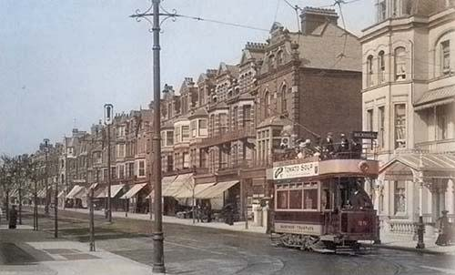
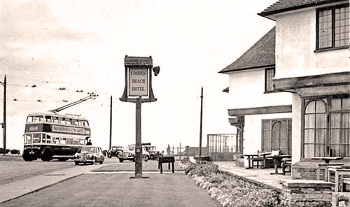

Tramway & Trolleybuses (1906-59)
Hastings Tramways Company was founded in early 1904 and public services started in 1906. Originally running from West Marina in St. Leonards to the roundabout on Marina road, it was extended later that year to Cooden Beach. Its full length was almost 20 miles (32 kilometres).The original Hastings electric trams used a ground level power supply, then later changed (due to safety reasons) to petrol powered dynamos, and finally to over-head wires (to the dismay of the wealthy who didn't want the poles spoiling their view!). Over-head wires were used in Bexhill from day one.[9]

Tram on the south end of Devonshire Road, circa 1908.
© Sussex PhotoHistory
The tramlines were removed in 1928 to make way for trolleybuses which were in use until 1959.

Trollybus, Cooden Beach Hotel.